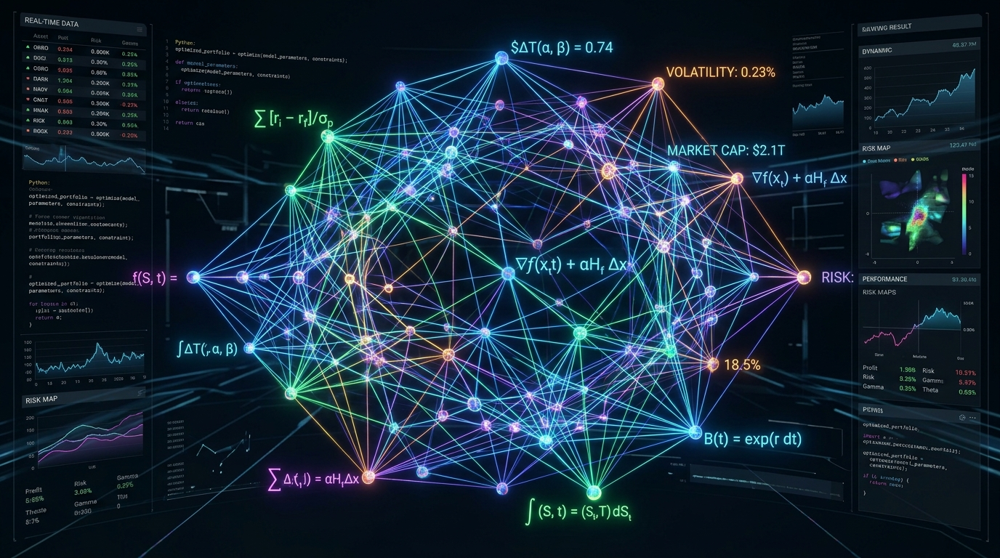
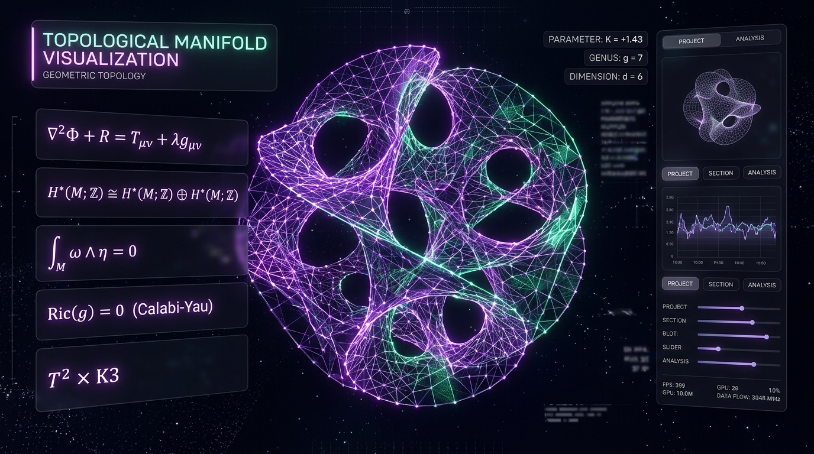

Quantitative EngineUltra-low latency numerical simulation and stochastic portfolio optimization engine written in C++20 and CUDA. Implements Heston model calibration, Monte Carlo jump diffusions, and fast spectral risk decomposition.
∫ ex dx
∇f(x) = 0
To become a Lead Quantitative Developer & Machine Learning Research Architect at the frontier of mathematical computing, high-frequency algorithms, and geometric deep learning. I aim to merge rigorous pure mathematics—topology, functional analysis, and stochastic calculus—with low-latency distributed software architectures to solve high-impact, real-world computational challenges.
Continuous daily commits, algorithmic problem-solving, and mathematical research codebases.
Mathematical formulations translated into clean, scalable open-source repositories.

Quantitative EngineUltra-low latency numerical simulation and stochastic portfolio optimization engine written in C++20 and CUDA. Implements Heston model calibration, Monte Carlo jump diffusions, and fast spectral risk decomposition.

Geometric Deep LearningGeometric deep learning framework for continuous-depth dynamical systems on Riemannian manifolds. Leverages persistent homology and Calabi-Yau metric approximations to learn physical invariant representations.
// Fast Sparse Graph Spectral Decomp
template <typename Real>
class SpectralManifold {
Laplacian<Real> L;
Vector eigenvalues;
Matrix eigenvectors;
};Combinatorial graph optimization package implementing Cheeger inequality partitions, spectral clustering, and Lanczos iterations with AVX-512 vectorization for high-throughput network analysis.
The long-term research frontiers, target industries, and transformative mathematical systems I strive to engineer.
Pioneering mathematical execution algorithms that operate on microsecond scales. Striving to build non-linear stochastic volatility models, order-book liquidity mechanics, and automated risk hedges governed by strict mathematical theorems.
Extending artificial intelligence beyond Euclidean spaces. Aiming to pioneer deep neural architectures that respect Lie group symmetries, gauge equivariance, and differential manifolds for physical sciences and complex materials discovery.
Synthesizing generative AI with formal proof assistants like Lean 4 and Coq. Aiming to develop neuro-symbolic systems capable of discovering novel mathematical conjectures, validating mission-critical cryptographic code, and verifying complex mathematical proofs.
Crafting distributed, cache-oblivious numerical linear algebra algorithms that achieve peak FLOP utilization across heterogeneous GPU/TPU clusters with fault-tolerant asynchronous execution.
Have an interesting mathematical problem, quantitative venture, or engineering role? Feel free to reach out directly.